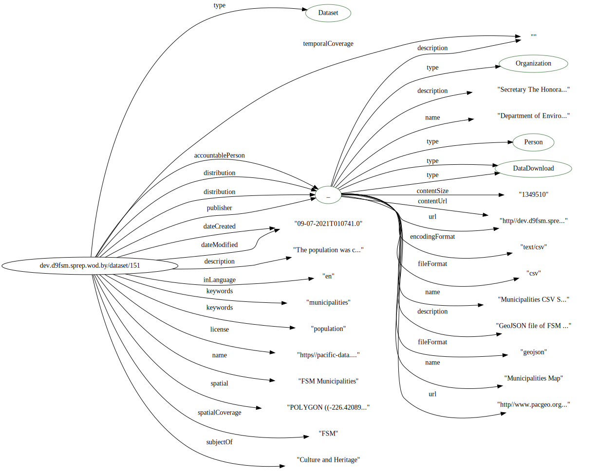

SPREP Data Testing¶
Notes¶
We are close on this one. Really just a few mods to the context and the sitemap and we are ready to index.
https://pacificdata.org/data/api/3/action/package_show?id=SPC-DF_POP_COAST
https://github.com/PacificCommunity/ckanext-spc-pdh/blob/master/ckanext/spc/schemas/dataset.json
import kglab as kg
from rdflib import Graph, plugin
from rdflib.serializer import Serializer
import pyshacl
import logging, sys
import json
from pyld import jsonld
import os, sys
currentdir = os.path.dirname(os.path.abspath(''))
parentdir = os.path.dirname(currentdir)
sys.path.insert(0, currentdir)
from lib import jbutils
context = {"schema": "https://schema.org/",
"rdf": "http://www.w3.org/1999/02/22-rdf-syntax-ns#",
"shacl": "http://www.w3.org/ns/shacl#" ,
"oihval": "https://oceans.collaborium.io/voc/validation/1.0.1/shacl#"
}
# docurl = "http://dev.d9fsm.sprep.wod.by/dataset/151/jsonld"
# g = Graph().parse("http://dev.d9fsm.sprep.wod.by/dataset/151/jsonld", format='json-ld')
# sgjld = g.serialize(format='json-ld', context=context, indent=4)
# doc = json.loads("http://dev.d9fsm.sprep.wod.by/dataset/151/jsonld")
# load file
g = Graph().parse("./sprep1.json", format='json-ld')
sgjld = g.serialize(format='json-ld', context=context, indent=4)
doc = json.loads(sgjld)
# print(doc)
# compacted = jsonld.compact(docurl, context)
compacted = jsonld.compact(doc, context)
# jd = json.dumps(compacted, indent=4)
# print(jd)
jbutils.show_graph(compacted)

Validation call¶
# set up the files we will use here
dg = './sprep1.json'
sg = '../validation/shapes/oih_dataset.ttl'
# pyshack sends output to log along with the vars. This suppresses that
logging.disable(sys.maxsize)
import kglab
namespaces = {
"schema": "https://schema.org/",
"shacl": "http://www.w3.org/ns/shacl#" ,
}
kg = kglab.KnowledgeGraph(
name = "Schema.org based datagraph",
base_uri = "https://example.org/id/",
namespaces = namespaces,
)
kg.load_jsonld(dg)
<kglab.kglab.KnowledgeGraph at 0x7f1e24730a90>
conforms, report_graph, report_text = kg.validate(
shacl_graph=sg,
shacl_graph_format="ttl"
)
print(report_text)
Validation Report
Conforms: False
Results (2):
Constraint Violation in MinCountConstraintComponent (http://www.w3.org/ns/shacl#MinCountConstraintComponent):
Severity: shacl:Violation
Source Shape: oihval:urlResourceProperty
Focus Node: <http://dev.d9fsm.sprep.wod.by/dataset/151>
Result Path: schema:url
Message: URL required for the location of the resource described by this metadata
Constraint Violation in MinCountConstraintComponent (http://www.w3.org/ns/shacl#MinCountConstraintComponent):
Severity: shacl:Violation
Source Shape: oihval:identifierResourceProperty
Focus Node: <http://dev.d9fsm.sprep.wod.by/dataset/151>
Result Path: schema:identifier
Message: Resource must have an identifier node
import pandas as pd
pd.set_option("max_rows", None)
sparql = """
SELECT ?path ?value ?constraint ?message ?id ?focus ?desc
WHERE {
?id rdf:type shacl:ValidationResult .
?id shacl:focusNode ?focus .
?id shacl:resultMessage ?message .
?id shacl:sourceConstraintComponent ?constraint .
OPTIONAL {
?id shacl:resultPath ?path .
}
OPTIONAL {
?id shacl:value ?value .
}
OPTIONAL {
?id shacl:description ?desc .
}
}
"""
df = report_graph.query_as_df(sparql)
df.head(10)
| path | constraint | message | id | focus | |
|---|---|---|---|---|---|
| 0 | schema:url | shacl:MinCountConstraintComponent | URL required for the location of the resource ... | _:n03a8abebbe694760844b154392a85363b2 | <http://dev.d9fsm.sprep.wod.by/dataset/151> |
| 1 | schema:identifier | shacl:MinCountConstraintComponent | Resource must have an identifier node | _:n03a8abebbe694760844b154392a85363b3 | <http://dev.d9fsm.sprep.wod.by/dataset/151> |